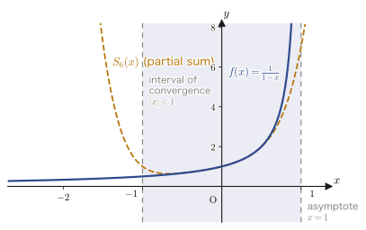
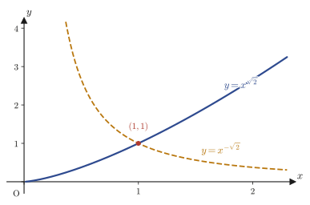
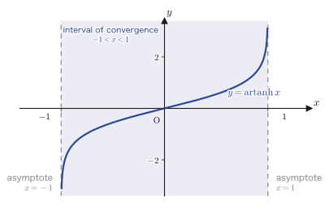

Chapter 39The Power Series Method and Frobenius Theory
From Chapter 33 through Chapter 38, we have been solving linear differential equations with constant coefficients (or equations that can be reduced to constant coefficients by a change of variable, as Euler's differential equation, also called the Cauchy–Euler equation, can be). We either set up the characteristic equation and substitute the exponential function $e^{\lambda x}$, or treat the operator $D=\dfrac{\dd}{\dd x}$ as if it were “just a letter” and construct inverse operators—and each of these methods is a technique that works precisely because the coefficients of the equation are constants that do not depend on $x$.
However, in many of the differential equations that appear in physics and materials science, the coefficients depend on $x$. Both Legendre's differential equation $(1-x^2)y''-2xy'+n(n+1)y=0$, which we study in the next chapter, and Bessel's differential equation $x^2y''+xy'+(x^2-n^2)y=0$, which follows it, have coefficients that are functions of $x$, so neither the characteristic equation nor the operator method can be used. How, then, should such equations be solved? In this chapter we study the answer: the power series method, and the Frobenius theory (also called the Frobenius method; named after Ferdinand Georg Frobenius), which generalizes the power series method around singular points. The idea is simple—assume that the solution $y$ can be written in the form of an infinite series $\sum a_k x^k$, substitute it into the differential equation, and determine the coefficients $a_k$. This seemingly naive method becomes the foundation that supports the entire theory of the “special functions,” such as the Legendre polynomials and the Bessel functions, that we treat from the next chapter on.
- That the proposition “every function can be expressed as a polynomial expression for all real numbers” is false—the counterexample $f(x)=\dfrac1{1-x}$ and the computation of the radius of convergence by d'Alembert's ratio test
- The three steps of the power series method (assume a series solution → substitute it and solve the recurrence relation → substitute the coefficients), and the definition of the radius of convergence
- The definitions of ordinary points and regular singular points for the second-order homogeneous linear differential equation $y''+P(x)y'+Q(x)y=0$, and the meaning of the word “analytic” (expandable in a Taylor series)
- The Frobenius series $y=(x-\alpha)^{\lambda}\sum a_k(x-\alpha)^k$ around a regular singular point, and the derivation of the indicial equation $\lambda(\lambda-1)+a_0\lambda+b_0=0$ that it must satisfy
- The fact that the form of the fundamental solutions changes according to the relationship between the two roots $\lambda_1,\lambda_2$ of the indicial equation (whether they coincide, and whether their difference is an integer)
- Working through, by hand, the power series method around an ordinary point (example from the original notes: $y''-\dfrac{2x}{1-x^2}y'=0$) and the Frobenius series method around a regular singular point (example from the original notes: $y''+\dfrac3xy'-\dfrac3{x^2}y=0$)
Source notes: Yasuhide Mochizuki, Mathematics Notes: Ordinary Differential Equations, pp. 51–59.
39.1 Why Do We Need Series Solutions? — The Limits of the Maclaurin Expansion
Why?: Motivation for this chapter
Legendre's differential equation, which we study in the next chapter, and Bessel's differential equation, which we study in the chapter after that, have coefficients that are functions of $x$, so the characteristic equation method and the operator method we have used so far cannot handle them. So we change our way of thinking. We assume that the solution $y(x)$ can be written as an infinite series (a power series), substitute it into the differential equation, and determine the coefficients—this is the power series method of this chapter. However, a question immediately arises about this approach: “Can any function really be written as an infinite series (= a polynomial of infinite degree)?” Let us begin by answering this question.
First, let us consider the following proposition.
Proposition. “Every function $f(x)$ can be expressed, for every real number $x$, as a polynomial expression in $x$ (a polynomial, or one whose terms continue infinitely).”
Is this true or false? To give the answer first, it is false. If we find a single counterexample, we can show that the proposition as a whole is false (in mathematics, a claim of the form “for all …” is false if there is even one example (a counterexample) to which it does not apply). As a counterexample, consider the following function.
$$ f(x) = \frac{1}{1-x} $$We expand this function in a Maclaurin series about $x=0$ (the general theory of Maclaurin expansion is treated formally in the next section, Section 39.2, but here we check it in a naive way, by letting $n\to\infty$ in the formula for the sum of a geometric sequence that you learned in high school mathematics (Mathematics III, a course in the Japanese high-school curriculum), $\dfrac{1}{1-x}=1+x+x^2+\cdots+x^{n-1}+\dfrac{x^n}{1-x}$). As an infinite geometric series with common ratio $x$, we obtain
$$ f(x) = \frac{1}{1-x} = 1+x+x^2+\cdots+x^n+\cdots \qquad \cdots\text{①} $$Here, the coefficients on the right-hand side of Eq. ① are all $a_n=1$. To investigate for which $x$ this infinite series makes sense (converges), we use d'Alembert's ratio test. In this test, we compute the limit of the ratio of adjacent coefficients of a series $\sum a_n x^n$,
$$ r = \lim_{n\to\infty}\left|\frac{a_n}{a_{n+1}}\right| $$and the series converges only in the range $\abs{x} \lt r$ (we call $r$ the radius of convergence; the formal definition and the general theory are given in the next section, Section 39.2). In the present case $a_n=1$ (constant, independent of $n$), so
$$ r = \lim_{n\to\infty}\left|\frac{1}{1}\right| = 1 $$Thus Eq. ① holds (that is, the series converges to $f(x)$) only in the range
$$ \abs{x} \lt 1 \quad \text{that is} \quad -1 \lt x \lt 1 $$In fact, substituting $x=2$ into the right-hand side of Eq. ① gives $1+2+4+8+\cdots$, which diverges to infinity and so does not correspond at all to the finite value of the left-hand side, $f(2)=\dfrac{1}{1-2}=-1$.
Conclusion: The proposition is false
Eq. ① can represent $f(x)=\dfrac1{1-x}$ only in the range $\abs{x}\lt1$. That is, the function $f(x)=\dfrac1{1-x}$ (which is defined for every real number other than $x=1$ and can be differentiated any number of times) cannot be expressed as a polynomial expression for all real numbers $x$. Therefore, the original proposition, “every function can be expressed as a polynomial expression for all real numbers,” is false. ∎
At first glance this conclusion looks negative, but it actually gives an important guideline for the power series method: a series is a tool that makes sense only “in the range where it equals the function (inside the radius of convergence)”. When we seek solutions of differential equations in the form of series later in this chapter, too, we must always keep in mind “for which values of $x$ the series makes sense” (in general, in a range where the coefficients of the equation have no singular point—around an “ordinary point,” which we study in Section 39.3—it is known that the radius of convergence of a series solution equals the distance to the singular point).

Example 39.1: Maclaurin expansion and radius of convergence of $f(x)=\dfrac1{1+x^2}$
Expand $f(x)=\dfrac{1}{1+x^2}$ in a Maclaurin series and find its radius of convergence using d'Alembert's ratio test.
Solution. Viewing it as a geometric series with common ratio $-x^2$ (substitute $t=-x^2$ into $\dfrac1{1-t}=1+t+t^2+\cdots$), we obtain
$$ f(x) = \frac{1}{1+x^2} = \frac1{1-(-x^2)} = 1+(-x^2)+(-x^2)^2+(-x^2)^3+\cdots = 1-x^2+x^4-x^6+\cdots $$In this series, all coefficients of odd-degree terms are $0$, and the coefficient of the even-degree term $x^{2m}$ is $a_{2m}=(-1)^m$. The ratio of adjacent coefficients that are not $0$ is
$$ \left|\frac{a_{2m}}{a_{2m+2}}\right| = \left|\frac{(-1)^m}{(-1)^{m+1}}\right| = 1 $$which is always $1$, regardless of $m$. Therefore, by d'Alembert's ratio test (we use the form of the formula with $x^2$ regarded as a single variable), the radius of convergence is $r=1$; that is, the series converges to $f(x)$ for $\abs{x}\lt1$. (We have verified with SymPy's $\mathrm{series}$ that $1-x^2+x^4-x^6$ agrees with the first four terms of the expansion. In fact, substituting $x=1$ gives the finite value $f(1)=1/2$, but the series side becomes $1-1+1-1+\cdots$, whose value is not determined, so we can also confirm that the series does not converge exactly at the boundary $x=\pm1$.)
39.2 The Procedure for Series Solutions and Fundamentals of Taylor Expansion
Functions such as $e^x,\sin x,\cos x$ can be differentiated any number of times (they are said to be of class $C^\infty$ (infinitely differentiable)), so they can be expanded in series in various forms. Turning this fact around, we assume that the solution of the differential equation itself can be written as an infinite series, substitute it into the original differential equation to derive the conditions (a recurrence relation) that the coefficients of the series must satisfy, and solve these to determine the coefficients—this is the power series method. Let us summarize the procedure.
Math Note: The three steps of the power series method
- Step 1. Assume that the solution $y$ can be expressed as an infinite series $y=\sum_{k}a_k x^k$ (or in a more general form, which we will study in the next section).
- Step 2. Substitute that series, in the forms $y,y',y''$, into the original differential equation, and from the resulting identity derive and solve the relation among the coefficients $a_k$ (the recurrence relation).
- Step 3. Substitute the coefficients found in Step 2 (the solution of the recurrence relation) into the series of Step 1 to obtain a concrete series solution.
What justifies “we may assume that the solution can be expressed as a series” in Step 1 is the Maclaurin expansion (the case $a=0$ of the Taylor expansion) that we studied in Chapter 4. Let us briefly recall just the result here.
Math Note: Review of the Maclaurin expansion (Chapter 4)
If a function $f(x)$ is differentiable any number of times on some interval containing $x=0$ (such a function is called “analytic”—this is an important word that we will use repeatedly in this chapter, and it means “expandable in a (Maclaurin) Taylor series”), then
\begin{equation} f(x) = \sum_{k=0}^{\infty}\frac{f^{(k)}(0)}{k!}(x-0)^k \label{eq:39-maclaurin} \end{equation}holds. However, this presupposes that the remainder $R_{n+1}$ (the error between the approximating polynomial up to degree $n$ and $f(x)$) converges to $0$ as $n\to\infty$; that is, that the Lagrange remainder satisfies $\displaystyle\lim_{n\to\infty}R_{n+1}=0$ (see Theorem 4.1 in Chapter 4).
Also, when we set the coefficient $a_k=\dfrac{f^{(k)}(0)}{k!}$, the quantity that tells us for which values of $x$ this series actually converges is the radius of convergence, which we already used in Section 39.1. We now define it formally.
Definition 39.1: Radius of convergence and d'Alembert's ratio test
For a power series $\displaystyle\sum_{k=0}^{\infty}a_k x^k$, the quantity
$$ R = \lim_{n\to\infty}\left|\frac{a_n}{a_{n+1}}\right| $$(when this limit exists) is called the radius of convergence of the series. The series converges (absolutely) for $\abs{x}\lt R$ and diverges for $\abs{x}\gt R$ (exactly on the boundary $\abs{x}=R$, a series may or may not converge, depending on the series).
Using this definition, the counterexample in Section 39.1 can be restated properly in these words: “the Maclaurin expansion of $f(x)=\dfrac1{1-x}$ has $a_n=\dfrac{f^{(n)}(0)}{n!}=1$ (constant, independent of $n$), so the radius of convergence is $R=\displaystyle\lim_{n\to\infty}\left|\dfrac{1}{1}\right|=1$.”
39.2.1 Maclaurin expansions of basic functions
Let us confirm the Maclaurin expansions of four basic functions that we often use as building blocks in the power series method. All of them were already derived in Chapter 4, so here we simply list the results and check the radius of convergence of each.
Math Note: The four basic Maclaurin expansions
\begin{equation} e^x = \sum_{k=0}^{\infty}\frac{x^k}{k!} = 1+x+\frac{x^2}{2!}+\frac{x^3}{3!}+\cdots \qquad (-\infty \lt x \lt \infty) \label{eq:39-exp-series} \end{equation} \begin{equation} \sin x = \sum_{k=0}^{\infty}\frac{(-1)^k}{(2k+1)!}x^{2k+1} = x-\frac{x^3}{3!}+\frac{x^5}{5!}-\frac{x^7}{7!}+\cdots \qquad (-\infty \lt x \lt \infty) \label{eq:39-sin-series} \end{equation} \begin{equation} \cos x = \sum_{k=0}^{\infty}\frac{(-1)^k}{(2k)!}x^{2k} = 1-\frac{x^2}{2!}+\frac{x^4}{4!}-\frac{x^6}{6!}+\cdots \qquad (-\infty \lt x \lt \infty) \label{eq:39-cos-series} \end{equation} \begin{equation} \log(1+x) = \sum_{k=1}^{\infty}\frac{(-1)^{k-1}}{k}x^k = x-\frac{x^2}{2}+\frac{x^3}{3}-\frac{x^4}{4}+\cdots \qquad (-1 \lt x \le 1) \label{eq:39-log-series} \end{equation}For the three functions $e^x,\sin x,\cos x$, the values $f^{(k)}(0)$ are determined periodically (or simply), so whatever the size of $x$, the ratio of coefficients $\left|a_n/a_{n+1}\right|$ diverges to $\infty$ as $n\to\infty$, and the radius of convergence is $R=\infty$ (that is, the series converges for all real numbers). On the other hand, $\log(1+x)$ has a genuine singular point at $x=-1$ (the end of the domain of the logarithm), so its radius of convergence is limited to $R=1$.
Caution: On an error in the original notes (the fourth term of $\log(1+x)$)
In the source notes, the fourth term (the $x^4$ term) of the expansion of $\log(1+x)$ is written as “$+\dfrac{x^4}{4}$”, but this is a sign error; the correct term is “$-\dfrac{x^4}{4}$”, as in Eq. \eqref{eq:39-log-series}. Indeed, setting $f(x)=\log(1+x)$, we have $f'(x)=(1+x)^{-1}$, $f''(x)=-(1+x)^{-2}$, $f'''(x)=2(1+x)^{-3}$, and $f^{(4)}(x)=-6(1+x)^{-4}$, so $f^{(4)}(0)=-6$. By Eq. \eqref{eq:39-maclaurin}, the Maclaurin coefficient is $a_4=\dfrac{f^{(4)}(0)}{4!}=\dfrac{-6}{24}=-\dfrac14$, so $-\dfrac{x^4}4$ is correct. (This also follows from the rule of the alternating series $(-1)^{k-1}$, whose signs alternate: for $k=4$ (even), the sign must be negative.) (The fourth derivative at zero and the Maclaurin coefficients were verified with SymPy.)
Example 39.2: The Maclaurin expansion of $f(x)=e^{-x^2}$ and its radius of convergence
Find the first four terms of the Maclaurin expansion of $f(x)=e^{-x^2}$, and determine its radius of convergence.
Solution. Substituting $t=-x^2$ into $e^t=1+t+\dfrac{t^2}{2!}+\dfrac{t^3}{3!}+\cdots$ of Eq. \eqref{eq:39-exp-series}, we obtain
$$ e^{-x^2} = 1+(-x^2)+\frac{(-x^2)^2}{2!}+\frac{(-x^2)^3}{3!}+\cdots = 1-x^2+\frac{x^4}{2}-\frac{x^6}{6}+\cdots $$(note that $(-x^2)^2=x^4$ and $(-x^2)^3=-x^6$). These are the first four terms. As for the radius of convergence, the expansion of the original $e^t$ converges for all real numbers $t$ ($R=\infty$; see Eq. \eqref{eq:39-exp-series}), and since $t=-x^2$ also takes a finite real value for every real number $x$, the expansion of $e^{-x^2}$ also converges for all real numbers $x$. Therefore the radius of convergence is $R=\infty$. (We verified that SymPy's $\mathrm{series}(e^{-x^2},x,0,8)$ agrees with $1-x^2+\dfrac{x^4}2-\dfrac{x^6}6$. Incidentally, this function is the kernel of the probability density function $\propto e^{-x^2/2}$ of the normal distribution in statistics, and is a very important function in applications.)
39.3 Frobenius Theory — Ordinary Points and Regular Singular Points
We now come at last to the main subject of this chapter, the general theory of series solutions of second-order homogeneous linear differential equations. The equation we treat has the following form.
$$ \frac{d^2y}{dx^2}+P(x)\frac{dy}{dx}+Q(x)y=0 \qquad \cdots\text{①} $$The coefficients $P(x),Q(x)$ cannot be just any functions. Whether a series solution exists depends on whether $P(x),Q(x)$ are “well-behaved” functions at a point $x=\alpha$. The key word here is “analytic.”
Meaning: What “analytic” means
As the annotation in the margin of the original notes says, “analytic” means “Taylor-expandable (around that point).” That is, saying that a function $g(x)$ is analytic at $x=\alpha$ means that $g(x)$ is infinitely differentiable near $x=\alpha$ and the equality $g(x)=\displaystyle\sum_{k=0}^{\infty}\dfrac{g^{(k)}(\alpha)}{k!}(x-\alpha)^k$ actually holds. For example, polynomials and $e^x,\sin x,\cos x$ are analytic at every real number; $g(x)=1/x$ is indeed not analytic at $x=0$ (it is not even defined there), but it is analytic at every point other than $x=0$.
39.3.1 Definitions of ordinary points, singular points, and regular singular points
For the coefficients $P(x),Q(x)$ of Eq. ①, we distinguish the following two cases according to their behavior around the point $x=\alpha$.
Definition 39.2: Ordinary point
When $P(x),Q(x)$ are both analytic at $x=\alpha$, the point $x=\alpha$ is called an ordinary point of Eq. ①. In this case it is known that a solution $y$ of Eq. ① is also analytic at $x=\alpha$ (it is enough to have this picture: if $P,Q$ can be Taylor-expanded, then the solution $y$ built from them can be Taylor-expanded as well), and Eq. ① has a series solution of the form
$$ y=\sum_{k=0}^{\infty}a_k(x-\alpha)^k $$The typical example of an ordinary point is $\alpha=0$.
Definition 39.3: Singular points and regular singular points
When at least one of $P(x),Q(x)$ is not analytic at $x=\alpha$, the point $x=\alpha$ is called a singular point of Eq. ①. At a singular point, the solution cannot be expressed by a series like that at an ordinary point (a series with only nonnegative powers of $(x-\alpha)$). However, among the singular points we consider the “well-behaved” ones that satisfy the following condition—
When $(x-\alpha)P(x)$ and $(x-\alpha)^2Q(x)$ are both analytic at $x=\alpha$, the point $x=\alpha$ is called a regular singular point of Eq. ①. In this case Eq. ① has a series solution of the form
\begin{equation} y=(x-\alpha)^{\lambda}\sum_{k=0}^{\infty}a_k(x-\alpha)^k \label{eq:39-frobenius-def} \end{equation}A series of this form is called a Frobenius series. (A singular point that does not satisfy this condition is called an “irregular singular point”; there the theory of series solutions is in general much harder and goes beyond the scope of this book.)
The Frobenius series $y=(x-\alpha)^{\lambda}\sum a_k(x-\alpha)^k$ is a generalization of the series solution at an ordinary point, $y=\sum a_k(x-\alpha)^k$—indeed, setting $\lambda=0$ gives exactly the series solution at an ordinary point. The exponent $\lambda$ need not be an integer (as we will see later, it can also be irrational or even non-real complex), and thanks to this “extra exponent” we can construct series solutions even at singular points.
Math Note: In most cases it suffices to consider $\alpha=0$
In the differential equations that actually arise, most singular points are at $\alpha=0$ (the origin) (Legendre's equation in the next chapter has singular points at $x=\pm1$, and Bessel's equation in the chapter after next has a singular point at $x=0$). So from here on we restrict ourselves to the case $\alpha=0$ and derive the indicial equation explicitly. The case of general $\alpha$ leads to exactly the same argument if we rename $x-\alpha$ as $x$ (that is, if we perform a translation).
Example 39.3: Confirming that $x=0$ is an ordinary point of $y''+y=0$ and solving it by the power series method
For the equation $y''+y=0$, confirm that $x=0$ is an ordinary point and solve it by the power series method (verify that $\sin x,\cos x$, which you learned in Chapters 1 and 2, are indeed solutions).
Solution. Written in the form of Eq. ①, the equation has $P(x)=0,\ Q(x)=1$; both are constant functions (a special case of polynomials) and hence analytic at every real number. In particular, $x=0$ is an ordinary point. Therefore the solution has the form $y=\displaystyle\sum_{k=0}^{\infty}a_kx^k$. Differentiating term by term,
$$ y'=\sum_{k=1}^{\infty}ka_kx^{k-1},\qquad y''=\sum_{k=2}^{\infty}k(k-1)a_kx^{k-2} $$Substituting into the original equation, we obtain
$$ \sum_{k=2}^{\infty}k(k-1)a_kx^{k-2}+\sum_{k=0}^{\infty}a_kx^k=0 $$Shifting the index in the left-hand sum by $k\to k+2$ (when we replace $k$ with $k+2$ in $k(k-1)a_k x^{k-2}$, the lower limit of the sum becomes $k=0$ and $x^{k-2}\to x^k$), we get
$$ \sum_{k=0}^{\infty}(k+2)(k+1)a_{k+2}x^{k}+\sum_{k=0}^{\infty}a_kx^k=0 \ \Longrightarrow\ \sum_{k=0}^{\infty}\bigl\{(k+2)(k+1)a_{k+2}+a_k\bigr\}x^k=0 $$Since this is an identity in $x$, the coefficient of each power must be $0$, and we obtain the recurrence relation
$$ a_{k+2}=-\frac{a_k}{(k+1)(k+2)} \qquad (k=0,1,2,\ldots) $$The coefficients $a_0,a_1$ can be chosen freely (they correspond to the initial values). Setting $a_0=1,a_1=0$, we get $a_2=-\dfrac1{2\cdot1}=-\dfrac12$, $a_4=-\dfrac{a_2}{4\cdot3}=\dfrac1{24}$, …, and since the coefficients of all odd powers are $0$, we obtain
$$ y=1-\frac{x^2}{2!}+\frac{x^4}{4!}-\cdots=\cos x $$In the same way, setting $a_0=0,a_1=1$ gives $y=\sin x$. The general solution is the linear combination $y=C_1\cos x+C_2\sin x$ of these two linearly independent solutions. This coincides exactly with the solution of $y''+y=0$ that you know from high school mathematics—the power series method is a way to “discover” even the familiar functions $\sin,\cos$ from the recurrence relation for the coefficients alone, without any knowledge of exponential or trigonometric functions. (Verified with SymPy that the recurrence relation agrees with the expansion of $\cos x$.)
39.3.2 Derivation of the indicial equation
From here on we actually construct series solutions around a regular singular point at $\alpha=0$. As a premise, suppose that $xP(x)$ and $x^2Q(x)$ are analytic at $x=0$ (this was the definition of a regular singular point). Being analytic means being Maclaurin-expandable, so we can write
$$ xP(x)=a_0+a_1x+a_2x^2+\cdots, \qquad x^2Q(x)=b_0+b_1x+b_2x^2+\cdots $$Dividing both sides by $x,x^2$, respectively, we see that $P(x),Q(x)$ themselves become the following “series with a $1/x$ term” (a special case of Laurent series).
$$ P(x)=\frac{a_0}{x}+a_1+a_2x+a_3x^2+\cdots, \qquad Q(x)=\frac{b_0}{x^2}+\frac{b_1}{x}+b_2+b_3x+\cdots $$Attention!: $P(x),Q(x)$ are often rational functions
In equations that actually have a regular singular point, $P(x),Q(x)$ are often given in the form of rational functions. For example, when $P(x)=\dfrac3x,\ Q(x)=\dfrac2{x^2}$, we have $xP(x)=3,\ x^2Q(x)=2$ (constant functions, of degree 0 in $x$, and of course analytic), so $a_0=3,b_0=2$, and all the other coefficients $a_1,b_1,a_2,b_2,\ldots$ are $0$. In this way, when $P(x),Q(x)$ are simple rational functions, it often suffices to look only at $a_0,b_0$.
With these $P(x),Q(x)$, Eq. ① has a solution in the form of a Frobenius series $y=x^{\lambda}\displaystyle\sum_{k=0}^{\infty}A_kx^k=\displaystyle\sum_{k=0}^{\infty}A_kx^{k+\lambda}$ (where we assume the leading coefficient $A_0\neq0$—otherwise the value of $\lambda$ itself would shift). Differentiating this once and twice, we obtain
$$ \frac{dy}{dx}=\sum_{k=0}^{\infty}(k+\lambda)A_kx^{k+\lambda-1}, \qquad \frac{d^2y}{dx^2}=\sum_{k=0}^{\infty}(k+\lambda)(k+\lambda-1)A_kx^{k+\lambda-2} $$Caution: On an error in the original notes ($A_n$ and $A_k$)
In the source notes, the coefficients in the two formulas above are written as “$A_n$,” but the summation index is $k$, and in the preceding formula ($y=\sum A_kx^{k+\lambda}$) the coefficient is also written $A_k$, so “$A_n$” is a slip for “$A_k$.” Below we proceed with the correct $A_k$.
We substitute the series expressions for $P(x),Q(x),y,y',y''$ into the original differential equation ①.
$$ \begin{aligned} \frac{d^2y}{dx^2}+P(x)\frac{dy}{dx}+Q(x)y &= \Bigl\{\lambda(\lambda-1)A_0x^{\lambda-2}+\lambda(\lambda+1)A_1x^{\lambda-1}+\cdots\Bigr\} \\ &\quad+\left(\frac{a_0}{x}+a_1+a_2x+\cdots\right)\Bigl\{\lambda A_0x^{\lambda-1}+(\lambda+1)A_1x^{\lambda}+\cdots\Bigr\} \\ &\quad+\left(\frac{b_0}{x^2}+\frac{b_1}{x}+b_2+\cdots\right)\Bigl(A_0x^{\lambda}+A_1x^{\lambda+1}+\cdots\Bigr) \\ &= 0 \end{aligned} $$We now rearrange this entire right-hand side by powers of $x$ ($x^{\lambda-2},x^{\lambda-1},x^{\lambda},\ldots$). What we want to focus on here is the lowest-order term $x^{\lambda-2}$. Each of the three brackets contributes exactly one term to it, as follows (every other combination gives a higher power than this).
- From the first line (the $y''$ term): $\lambda(\lambda-1)A_0x^{\lambda-2}$ (this is already the lowest-order term as it stands)
- From the second line (the $P(x)y'$ term): $\dfrac{a_0}{x}\times\lambda A_0x^{\lambda-1}=a_0\lambda A_0x^{\lambda-2}$ (the product of the $\frac1x$ term and the lowest-order term of $y'$)
- From the third line (the $Q(x)y$ term): $\dfrac{b_0}{x^2}\times A_0x^{\lambda}=b_0A_0x^{\lambda-2}$ (the product of the $\frac1{x^2}$ term and the lowest-order term of $y$)
Therefore, if we extract only the coefficient of $x^{\lambda-2}$ and collect terms, we obtain
$$ \bigl\{\lambda(\lambda-1)+a_0\lambda+b_0\bigr\}A_0\,x^{\lambda-2}+(\text{polynomial})A_1\,x^{\lambda-1}+\cdots=0 $$This is an identity in $x$, and $A_0\neq0$ (we assumed this in the definition of a Frobenius series), so the coefficient of $x^{\lambda-2}$ must by itself be equal to $0$. That is, the following must hold:
This quadratic equation in $\lambda$ is called the indicial equation. On the other hand, the equations obtained by setting the coefficients from $x^{\lambda-1}$ onward equal to $0$ (the “$(\text{polynomial})A_1=0$” in the formula above and the equations after it) become the recurrence relation that determines $A_1,A_2,\ldots$ in turn from $A_0$ once $\lambda$ has been fixed—we will confirm this by working it out by hand in the concrete examples of Section 39.5 (the examples on pp. 58 and 59 of the original notes).
Cross-check: Confirmation by symbolic computation in the general case
We repeated the above argument by a symbolic computation that treats the coefficients as letters ($a_0,a_1,a_2$, $b_0,b_1,b_2$, $A_0,A_1,A_2,A_3$). Substituting $y=x^{\lambda}(A_0+A_1x+A_2x^2+A_3x^3)$ into Eq. ① and dividing the resulting expression by $x^{\lambda-2}$ gives a polynomial whose constant term (that is, the coefficient of $x^{\lambda-2}$) is exactly $A_0\{\lambda(\lambda-1)+a_0\lambda+b_0\}$; we confirmed this by expanding and collecting terms with SymPy. This corroborates that the route taken by the hand computation is correct.
Example 39.4: Classifying the singular point of $y''-\dfrac1xy'=0$ at $x=0$
For the equation $y''-\dfrac1xy'=0$, determine what kind of point $x=0$ is (an ordinary point, a regular singular point, or something else).
Solution. Putting the equation in the form of Eq. ①, we have $P(x)=-\dfrac1x,\ Q(x)=0$. The function $P(x)=-1/x$ is not even defined at $x=0$ (the denominator becomes $0$), so it is not analytic there, and $x=0$ is a singular point. So we examine $xP(x),x^2Q(x)$:
$$ xP(x)=x\cdot\left(-\frac1x\right)=-1, \qquad x^2Q(x)=x^2\cdot0=0 $$Both are analytic at $x=0$ (as constant functions). Therefore $x=0$ is a regular singular point. In this case $a_0=-1,b_0=0$ (and all the other $a_i,b_i$ are also $0$), so the indicial equation \eqref{eq:39-indicial} becomes
$$ \lambda(\lambda-1)+(-1)\lambda+0=\lambda^2-2\lambda=\lambda(\lambda-2)=0 \ \Longrightarrow\ \lambda=0,\,2 $$Indeed, $y=1$ (a constant function, corresponding to $\lambda=0$) is a solution of this equation because $y''=0,\ y'=0$, and $y=x^2$ (corresponding to $\lambda=2$) also satisfies it because $y''=2,\ y'=2x$ give $2-\dfrac1x\cdot2x=2-2=0$; so both are certainly solutions. (Verified with SymPy that both satisfy the equation.)
39.4 Roots of the Indicial Equation and Fundamental Solutions
In the previous section we saw that substituting the Frobenius series solution $y=x^{\lambda}\sum_{k=0}^{\infty}A_kx^k$ around the regular singular point $x=0$ leads, from the coefficient of the lowest-order term, to the indicial equation \eqref{eq:39-indicial}. Since the indicial equation is a quadratic equation in $\lambda$, it generally has two roots $\lambda_1,\lambda_2$. In this section we actually solve it, and sort out how the way of constructing the fundamental solutions $y_1,y_2$ changes according to the relation between the two roots $\lambda_1,\lambda_2$—whether they coincide, and, if they do not, whether their difference is an integer.
39.4.1 The two roots of the indicial equation
Expanding and collecting the left-hand side $\lambda(\lambda-1)+a_0\lambda+b_0$ of the indicial equation \eqref{eq:39-indicial} in powers of $\lambda$, we obtain
\begin{equation} \lambda^2+(a_0-1)\lambda+b_0=0 \label{eq:39-indicial-expand} \end{equation}which is an ordinary quadratic equation in $\lambda$. The quadratic formula, familiar from high school mathematics, can be used as it is, giving
$$ \lambda=\frac{-(a_0-1)\pm\sqrt{(a_0-1)^2-4b_0}}{2} $$as the two roots $\lambda_1,\lambda_2$ ($a_0,b_0$ are the constant terms of the Maclaurin expansions of $xP(x),\ x^2Q(x)$, as defined in the previous section). Below, we adopt the convention of numbering the roots so that $\lambda_1\ge\lambda_2$ when they are real—as we will see later, building the power series from the larger exponent always makes the computation go smoothly.
Theorem 39.1: The two roots of the indicial equation and the three cases for the fundamental solutions
Let $\lambda_1\ge\lambda_2$ be the two roots of the indicial equation \eqref{eq:39-indicial-expand} (for real roots; the case of complex roots is included in (i)). Then the two fundamental solutions $y_1,y_2$ of Eq. ① around the regular singular point $x=0$ fall into the following three cases.
(i) When $\lambda_1-\lambda_2$ is not an integer
$$ y_1=x^{\lambda_1}\sum_{k=0}^{\infty}a_kx^k,\qquad y_2=x^{\lambda_2}\sum_{k=0}^{\infty}b_kx^k \qquad (a_0=b_0=1\text{ may be assumed by normalization}) $$In this case, whichever of $\lambda_1,\lambda_2$ we start from, the recurrence relation can be solved through to the end without any hitch, and two independent Frobenius series are obtained as they stand.
(ii) When $\lambda_1=\lambda_2$ (a repeated root)
$$ y_1=x^{\lambda_1}\sum_{k=0}^{\infty}a_kx^k,\qquad y_2=y_1\ln x+x^{\lambda_1}\sum_{k=1}^{\infty}c_kx^k $$(iii) When $\lambda_1-\lambda_2=N$ (a positive integer)
$$ y_1=x^{\lambda_1}\sum_{k=0}^{\infty}a_kx^k,\qquad y_2=Cy_1\ln x+x^{\lambda_2}\sum_{k=0}^{\infty}c_kx^k $$However, the constant $C$ can be $0$ for some equations (in the example of Section 39.5.2 we will see a case in which $C=0$ actually occurs).
Caution: On reusing the symbols $a_k,b_k$
The $a_k,b_k$ used here are different symbols from the $a_k,b_k$ defined in Section 39.3.2 by $xP(x)=a_0+a_1x+\cdots$, $x^2Q(x)=b_0+b_1x+\cdots$ (the coefficients of the Maclaurin expansions of the coefficient functions $P(x),Q(x)$ themselves). The same letters are reused so as not to complicate the notation, but note that the $a_k,b_k$ in Theorem 39.1 refer to the series coefficients of the fundamental solutions $y_1,y_2$ themselves, so the objects they denote are entirely different. For example, in Example 39.8 of Section 39.5.2, the values $a_0=3,\ b_0=-3$ in the sense of Section 39.3.2 (the values of $xP(x),x^2Q(x)$) appear, but these are entirely unrelated to the $a_0,b_0$ in the statement of Theorem 39.1, “$a_0=b_0=1$ may be assumed by normalization” (the leading coefficients of the series of $y_1,y_2$), so let us be careful not to confuse them.
The original notes state explicitly, on p. 56, only the form of the fundamental solutions in case (i) (the next page, p. 57, is left blank, the case distinction into (ii) and (iii) is never written down, and the notes go on to concrete examples from p. 58 onward). Cases (ii) and (iii) are therefore additions supplied in this book as a general theory.
Why?: The reason special treatment is needed only when the difference is an integer
The reason the logarithm $\ln x$ shows up in (ii) and (iii) is easy to grasp if we recall Euler's differential equation in Chapter 36—when the characteristic equation $\lambda^2+(a-1)\lambda+b=0$ had a repeated root $\lambda_0$, the other fundamental solution was $x^{\lambda_0}\ln x$. In fact, Euler's differential equation $x^2y''+axy'+by=0$ has $P(x)=a/x,\ Q(x)=b/x^2$ ($a_0=a,\ b_0=b$, and all the other $a_i,b_i$ are $0$), which is the simplest case of a Frobenius series (all the terms with $k\ge1$ are unnecessary). It is therefore only natural that a logarithm is needed for a repeated root for the same reason.
The case (iii), in which the difference is a positive integer $N$, is special for the following reason. The recurrence relation that determines the coefficients $c_k$ starting from the smaller root $\lambda_2$ has the form $\{(\lambda_2+k)(\lambda_2+k-1)+a_0(\lambda_2+k)+b_0\}c_k=(\text{terms built from the coefficients determined so far})$. The expression in the braces on the left-hand side is nothing other than the left-hand side of the indicial equation \eqref{eq:39-indicial-expand} with $\lambda=\lambda_2+k$ substituted. But when $k=N$ we have $\lambda_2+N=\lambda_1$, and $\lambda_1$ is precisely the other root of the indicial equation, so this expression in braces becomes exactly $0$. If the “terms built from the coefficients determined so far” on the right-hand side happen to be $0$, then $c_N$ may be chosen freely (no logarithmic term is needed, $C=0$); otherwise a logarithmic term is needed to make things consistent—this is the substance of (iii) (in Example 39.8 of Section 39.5.2, we will see this phenomenon actually occur at $k=4$).
Example 39.5: The indicial equation for $P(x)=\dfrac1x,\ Q(x)=-\dfrac2{x^2}$
For the equation $y''+P(x)y'+Q(x)y=0$ with $P(x)=\dfrac1x,\ Q(x)=-\dfrac2{x^2}$, verify that $x=0$ is a regular singular point, set up the indicial equation, and find the values of $\lambda$.
Solution. We have $xP(x)=x\cdot\dfrac1x=1$ and $x^2Q(x)=x^2\cdot\left(-\dfrac2{x^2}\right)=-2$, and both are analytic at $x=0$ as constant functions (independent of $x$). Hence $a_0=1,\ b_0=-2$ (all the other $a_i,b_i$ are $0$), and $x=0$ is a regular singular point. The indicial equation \eqref{eq:39-indicial-expand} is
$$ \lambda^2+(1-1)\lambda+(-2)=\lambda^2-2=0 \ \Longrightarrow\ \lambda=\pm\sqrt2 $$We have $\lambda_1=\sqrt2,\ \lambda_2=-\sqrt2$, and the difference $\lambda_1-\lambda_2=2\sqrt2\approx2.83$ is not an integer. This is therefore case (i) of Theorem 39.1, and the two fundamental solutions are simply $y_1=x^{\sqrt2},\ y_2=x^{-\sqrt2}$ (when $a_0,b_0$ are constants and the other $a_i,b_i$ are $0$, the terms with $k\ge1$ may all be taken to be $0$, and the series is complete with its leading term alone). Indeed, if we substitute $y=x^{r}$ ($r$ a constant) directly into the equation, then since $y'=rx^{r-1},\ y''=r(r-1)x^{r-2}$,
$$ r(r-1)x^{r-2}+\frac1x\cdot rx^{r-1}-\frac2{x^2}\cdot x^{r}=\bigl\{r(r-1)+r-2\bigr\}x^{r-2}=(r^2-2)x^{r-2} $$and we can confirm that this is exactly $0$ when $r=\pm\sqrt2$ (this is just the indicial equation $\lambda^2-2=0$ itself). (Verified with SymPy that both $r=\pm\sqrt2$ satisfy the equation.)

0. The graph of x^√2 rises smoothly from the origin and increases monotonically. The graph of x^(-√2) diverges upward as x approaches 0 and tends to 0 as x grows. The two curves intersect at x=1, where they share the value 1." style="max-width:640px;width:100%">39.5 Examples of Series Solutions
We now test the general theory developed so far by working through, by hand, two concrete differential equations that appear in the original notes. The first is a series solution about an ordinary point (Section 39.5.1); the second is a Frobenius series solution about a regular singular point, in the case where, moreover, the two roots of the indicial equation turn out to differ by an integer (Section 39.5.2).
39.5.1 Series solution about an ordinary point
Example 39.6: Series solution of $y''-\dfrac{2x}{1-x^2}y'=0$ ($-1\lt x\lt1$)
Find the solution of the equation $\dfrac{d^2y}{dx^2}-\dfrac{2x}{1-x^2}\dfrac{dy}{dx}=0$ ($-1\lt x\lt1$) by the power series method.
Solution. Let $P(x)=-\dfrac{2x}{1-x^2},\ Q(x)=0$. In the range $-1\lt x\lt1$ the denominator $1-x^2$ never becomes $0$, so $P(x)$ (and, of course, $Q(x)=0$, which is a polynomial) is analytic at $x=0$, and $x=0$ is an ordinary point. Therefore the solution can be expressed in the form
$$ y=\sum_{k=0}^{\infty}a_k(x-0)^k $$To find the coefficients, we differentiate $y$ once and twice.
$$ \frac{dy}{dx}=\sum_{k=1}^{\infty}a_k\cdot kx^{k-1},\qquad \frac{d^2y}{dx^2}=\sum_{k=2}^{\infty}a_k\cdot k(k-1)x^{k-2} $$Substituting these into the original equation gives
$$ \sum_{k=2}^{\infty}a_k\,k(k-1)x^{k-2} - \frac{2x}{1-x^2}\sum_{k=1}^{\infty}a_k\,kx^{k-1} = 0 $$The denominator $1-x^2$ on the right-hand side is a nuisance, so we multiply both sides by $1-x^2$ to clear it. At this point we split off by itself only the leading term ($k=1$) of the sum $\sum_{k=1}^{\infty}a_k kx^{k-1}$ in the second term—this is preparation for making it easy, later on, to align the exponents with the sum in the first term (which starts from $k=2$) and compare them.
$$ (1-x^2)\sum_{k=2}^{\infty}a_k\,k(k-1)x^{k-2} - 2x\left(a_1+\sum_{k=2}^{\infty}a_k\,kx^{k-1}\right) = 0 $$We expand the left-hand side. Distributing $(1-x^2)$ over the sum in the first term (it splits into the part multiplied by $1$ and the part multiplied by $-x^2$), and distributing $-2x$ over each of $a_1$ and the sum inside the parentheses, the left-hand side becomes
$$ \sum_{k=2}^{\infty}a_k\,k(k-1)x^{k-2} - \sum_{k=2}^{\infty}a_k\,k(k-1)x^{k} - 2a_1x - 2\sum_{k=1}^{\infty}a_k\,kx^{k} = 0 $$(In the last term, the part coming from the $a_1x^0$ that we split off earlier and the part coming from the remaining sum $\sum_{k=2}^\infty$ have been combined and written in the original form $\sum_{k=1}^\infty$.) Finally, we want to arrange all the terms in powers of $x^k$ and compare coefficients. The sum in the first term, $\sum_{k=2}^{\infty}a_k k(k-1)x^{k-2}$, has the power $x^{k-2}$, so we shift the index by $k\to k+2$ (this shift also makes the lower limit of the sum $k=0$, so we split off beforehand the $k=0$ term $2a_2$ and the $k=1$ term $6a_3x$), which gives
$$ 2a_2 + 6a_3x + \sum_{k=2}^{\infty}a_{k+2}(k+1)(k+2)x^{k} - \sum_{k=2}^{\infty}a_k\,k(k-1)x^{k} - 2a_1x - \sum_{k=1}^{\infty}2a_k\,kx^{k} = 0 $$Now we collect the terms in $x^0,x^1$ separately (the coefficient of $x^1$ is obtained by combining $6a_3x$ with the $k=1$ term $-2a_1x$ of the last sum, giving $6a_3-2a_1=2(3a_3-a_1)$), and for the coefficient of $x^k$ ($k\ge2$) it suffices to compare the two sums directly, so we obtain
\begin{equation} 2a_2 + 2(3a_3-a_1)x + \sum_{k=2}^{\infty}\bigl\{(k+1)(k+2)a_{k+2} - k(k+1)a_k\bigr\}x^{k} = 0 \label{eq:39-ex6-identity} \end{equation}Since Eq. \eqref{eq:39-ex6-identity} is an identity in $x$, the coefficient of each power must itself be $0$. That is,
$$ a_2=0,\qquad 3a_3-a_1=0,\qquad (k+1)(k+2)a_{k+2}-k(k+1)a_k=0\ \ (k=2,3,\ldots) $$The last recurrence relation can be divided through by $k+1\neq0$ (automatic, since $k\ge2$), which gives $a_{k+2}=\dfrac{k}{k+2}a_k$. Starting from $a_2=0$, this recurrence makes all the even-degree coefficients $0$.
$$ a_2=a_4=a_6=\cdots=0 $$On the other hand, the odd-degree coefficients are determined one after another starting from $a_1$.
$$ a_3=\frac13a_1,\qquad a_5=\frac35a_3=\frac15a_1,\qquad a_7=\frac57a_5=\frac17a_1 $$(In general the pattern is $a_{2m+1}=\dfrac1{2m+1}a_1$—check that when we multiply the fractions $\dfrac{k}{k+2}$ one after another, all the intermediate factors cancel and disappear.) Therefore the series solution is
\begin{equation} y=a_0+a_1\left(x+\frac{x^3}{3}+\frac{x^5}{5}+\frac{x^7}{7}+\cdots\right) \label{eq:39-ex6-series} \end{equation}Here $a_0,a_1$ are two arbitrary constants that can be chosen freely according to the initial values, and they supply the freedom of two fundamental solutions.
Observation: What function is this series?—Connection with the inverse hyperbolic functions of Chapter 2
Does the series $x+\dfrac{x^3}3+\dfrac{x^5}5+\dfrac{x^7}7+\cdots$ inside the parentheses of Eq. \eqref{eq:39-ex6-series} look familiar? It is nothing other than the Maclaurin expansion of the inverse hyperbolic tangent function that we studied in Chapter 2 (also written $\tanh^{-1}x$ or $\operatorname{artanh}x$). Indeed, substituting $y=a_0+a_1\operatorname{artanh}x$ directly into the equation (using $\dfrac{d}{dx}\operatorname{artanh}x=\dfrac1{1-x^2}$), we get
$$ y'=\frac{a_1}{1-x^2},\qquad y''=\frac{2a_1x}{(1-x^2)^2} $$ $$ y''-\frac{2x}{1-x^2}y' = \frac{2a_1x}{(1-x^2)^2}-\frac{2x}{1-x^2}\cdot\frac{a_1}{1-x^2} = \frac{2a_1x-2a_1x}{(1-x^2)^2}=0 $$Thus we confirm that the equation is satisfied exactly (verified with SymPy). In other words, just as the power series method let us “discover $\sin x,\cos x$ from $y''+y=0$ without knowing them” (Example 39.3), it shows that “without knowing the name $\operatorname{artanh}x$, we can discover its series expansion from the recurrence relation for the coefficients alone.” Furthermore, the fact that the radius of convergence of the series $y=a_0+a_1\operatorname{artanh}x$ is exactly $1$ ($\abs x\lt1$) is a good example of the general rule stated in Section 39.1—the radius of convergence of a series solution equals the distance to the nearest point at which the coefficients of the equation have a singular point. Indeed, $P(x)=-\dfrac{2x}{1-x^2}$ has singular points at $x=\pm1$ (where the denominator is $0$), and the distance to them is exactly $1$ (Figure 39.4).

Example 39.7: Series solution of $y''+\dfrac{2x}{1+x^2}y'=0$ (a problem similar to Example 39.6)
Find the solution of the equation $\dfrac{d^2y}{dx^2}+\dfrac{2x}{1+x^2}\dfrac{dy}{dx}=0$ by the power series method.
Solution. Since the denominator $1+x^2$ does not become $0$ for any real number $x$, $P(x)=\dfrac{2x}{1+x^2}$ is analytic for all real numbers, and $x=0$ is an ordinary point (only the sign differs from Example 39.6, and the idea is exactly the same). Let $y=\sum_{k=0}^{\infty}a_kx^k$ and substitute. Following exactly the same procedure as in Example 39.6 (multiply both sides by $1+x^2$ to clear the denominator, align the indices, and compare the coefficients of $x^k$), we obtain the identity
$$ 2a_2+2(3a_3+a_1)x+\sum_{k=2}^{\infty}\bigl\{(k+1)(k+2)a_{k+2}+k(k+1)a_k\bigr\}x^k=0 $$(Compared with Eq. \eqref{eq:39-ex6-identity}, the identity of Example 39.6, several signs are reversed because the $-x^2$ term has become a $+x^2$ term.) Hence we obtain $a_2=0$, $3a_3=-a_1$, and the recurrence relation $a_{k+2}=-\dfrac{k}{k+2}a_k$ ($k\ge2$). Again all the even-degree coefficients are $0$, and the odd-degree coefficients are determined successively as follows:
$$ a_3=-\frac13a_1,\qquad a_5=-\frac35a_3=\frac15a_1,\qquad a_7=-\frac57a_5=-\frac17a_1 $$Here the sign alternates as the coefficients are determined. Therefore the series solution is
$$ y=a_0+a_1\left(x-\frac{x^3}{3}+\frac{x^5}{5}-\frac{x^7}{7}+\cdots\right) $$The series in parentheses is exactly the Maclaurin expansion of the inverse tangent function ($\arctan x=\tan^{-1}x$), so $y=a_0+a_1\arctan x$ is the closed-form solution. Indeed, using $\dfrac{d}{dx}\arctan x=\dfrac1{1+x^2}$, a calculation exactly like that of Example 39.6 confirms that $y=a_0+a_1\arctan x$ satisfies the equation exactly (verified with SymPy). The radius of convergence of the expansion of $\arctan x$ is $1$, which again corresponds to the singular points of $P(x)=\dfrac{2x}{1+x^2}$ ($x=\pm i$; these are complex singular points, but they still make themselves felt in the real radius of convergence as a distance of $1$).
39.5.2 Examples of Frobenius series — the case where the two roots of the indicial equation differ by an integer
Example 39.8: Frobenius series solution of $y''+\dfrac3xy'-\dfrac3{x^2}y=0$ ($x\neq0$)
Find the solution of the equation $\dfrac{d^2y}{dx^2}+\dfrac3x\dfrac{dy}{dx}-\dfrac3{x^2}y=0$ ($x\neq0$).
Solution. Letting $P(x)=\dfrac3x,\ Q(x)=-\dfrac3{x^2}$, we have
$$ xP(x)=x\cdot\frac3x=3,\qquad x^2Q(x)=x^2\cdot\left(-\frac3{x^2}\right)=-3 $$and both are constant functions (independent of $x$), hence analytic at $x=0$.
Caution: On an error in the original notes (sign of $x^2Q(x)$)
In the source notes, this line is written as “$-x^2Q(x)=-3$”, with an extra minus sign at the front. However, a direct computation gives $x^2Q(x)=x^2\cdot\left(-\dfrac3{x^2}\right)=-3$, so no leading minus sign is needed. In fact, even in the sentence that immediately follows in the notes, the author himself writes “$x^2Q(x)$” (without the minus sign), so the leading minus sign can be judged to be a slip of the pen. Below we proceed with the correct value $x^2Q(x)=-3$.
Therefore $x=0$ is a regular singular point, and the equation has a solution of the form $y=(x-0)^{\lambda}\displaystyle\sum_{k=0}^{\infty}a_k(x-0)^k$. Here $a_0=3,\ b_0=-3$. Differentiating $y$ once and then twice, we have
$$ \frac{dy}{dx}=\sum_{k=0}^{\infty}a_k(\lambda+k)x^{\lambda+k-1},\qquad \frac{d^2y}{dx^2}=\sum_{k=0}^{\infty}a_k(\lambda+k)(\lambda+k-1)x^{\lambda+k-2} $$Substituting these into the original equation, we obtain
$$ \sum_{k=0}^{\infty}a_k(\lambda+k)(\lambda+k-1)x^{\lambda+k-2} + \frac3x\sum_{k=0}^{\infty}a_k(\lambda+k)x^{\lambda+k-1} - \frac3{x^2}\sum_{k=0}^{\infty}a_kx^{\lambda+k} = 0 $$In the second and third terms on the right-hand side, if we bring the factors $\dfrac1x,\dfrac1{x^2}$, respectively, inside the sums, all the terms can be put into a form in which they have the same exponent $x^{\lambda+k-2}$ (note that $\dfrac3x\cdot x^{\lambda+k-1}=3x^{\lambda+k-2}$ and $-\dfrac3{x^2}\cdot x^{\lambda+k}=-3x^{\lambda+k-2}$). Factoring $x^{\lambda+k-2}$ out of all the terms in this way, we get
$$ \sum_{k=0}^{\infty}\Bigl\{a_k(\lambda+k)(\lambda+k-1) + 3a_k(\lambda+k) - 3a_k\Bigr\}x^{\lambda+k-2} = 0 $$This is an identity in $x$, so for each $k$ the expression in the braces must be $0$.
\begin{equation} \bigl\{(\lambda+k)(\lambda+k-1)+3(\lambda+k)-3\bigr\}a_k=0 \qquad (k=0,1,2,\ldots) \label{eq:39-ex8-recursion} \end{equation}Consider the case $k=0$. By the definition of a Frobenius series, $a_0\neq0$, so the expression in the braces must itself be $0$. This is exactly the indicial equation \eqref{eq:39-indicial-expand} with $a_0=3,b_0=-3$ substituted.
$$ \lambda(\lambda-1)+3\lambda-3=\lambda^2+2\lambda-3=0 \ \Longrightarrow\ \lambda=1,\,-3 $$We have $\lambda_1=1,\ \lambda_2=-3$, and the difference $\lambda_1-\lambda_2=4$ is a positive integer—this is case (iii) of Theorem 39.1, which requires special care.
First we find $y_1$ from the larger root $\lambda=1$. Substituting $\lambda=1$ into Eq. \eqref{eq:39-ex8-recursion}, we get
$$ \bigl\{(1+k)(k)+3(1+k)-3\bigr\}a_k=(k^2+k+3k+3-3)a_k=(k^2+4k)a_k=k(k+4)a_k=0 $$For $k=1,2,3,\ldots$ we have $k(k+4)\neq0$, so $a_k=0$ must hold for all of these $k$. Therefore only the leading term with $a_0$ remains in the series, and we obtain
$$ y_1=a_0x \quad\text{that is,}\quad y_1=x $$as one of the fundamental solutions.
Next, a problem arises when we try to find $y_2$ from the other root $\lambda=-3$. As also noted in Theorem 39.1 of Section 39.4, when $\lambda_1-\lambda_2=4$ (a positive integer), there is a danger that the recurrence relation built from the smaller root will run into “resonance” partway through. Indeed, substituting $\lambda=-3$ into Eq. \eqref{eq:39-ex8-recursion}, the expression in the braces becomes $\{(k-3)(k-4)+3(k-3)-3\}=k(k-4)$ (that it factors was verified with SymPy), which is exactly $0$ at $k=4$ (= $\lambda_1-\lambda_2$). That is, in the recurrence relation coming from $\lambda=-3$, the coefficient $a_4$ is left undetermined at $k=4$—this phenomenon occurs because $\lambda_2+4=\lambda_1=1$ coincides with the other root. In this situation, if $a_4$ can be chosen freely, the resulting series ends up containing an extra constant multiple of $y_1=x$, and it is not necessarily a “truly new” solution that is linearly independent of $y_1$ (it is not guaranteed that the Wronskian is not identically $0$). So rather than pushing on in this way, we find $y_2$ by another method.
Here, the conceivable ways of expressing $y_2$ in terms of $y_1$ are either a constant multiple $y_2=Cy_1$ (this is merely a constant multiple of $y_1$ itself and carries no new information) or a form with a constant added, $y_2=C+y_1$ ($C$ is a constant). Let us actually try the latter. Letting $y_2=C+x$, we have $y_2'=1,\ y_2''=0$, so substituting this into the equation gives
$$ \frac3x\cdot1-\frac3{x^2}(C+x)=\frac3x-\frac{3C}{x^2}-\frac3x=-\frac{3C}{x^2} $$For this to be $0$ for all $x$, we must have $C=0$. That is, even if we try the form $y_2=C+y_1$, all we obtain is $y_2=y_1$ (linear, or “$1$st-degree,” dependence), and no new solution independent of $y_1$ appears (verified with SymPy). Since both of the simple forms, a constant multiple and a constant added, fail, let us generalize the constant $C$ to a function $u(x)$ of $x$—
We use the method for the case in which one fundamental solution is known (Chapter 36; it is also called reduction of order). Since $y_1=x$ is known, we expect that another solution $y_2$ can be expressed, using some function $u(x)$, in the form $y_2=u(x)y_1=x\,u(x)$. The general solution can then be written, with $C_1$ the coefficient of $y_1$ and $C_2'$ the coefficient of $y_2$, as
$$ y=C_1y_1+C_2'y_2=y_1\bigl(C_1+C_2'u(x)\bigr) $$Now let $y_2=x\,u(x)$ ($u(x)$ is an unknown function) and substitute this into the original equation. By the product rule, we have
$$ y_2'=u+xu',\qquad y_2''=2u'+xu'' $$Substituting these into the equation $y''+\dfrac3xy'-\dfrac3{x^2}y=0$ gives
$$ (2u'+xu'')+\frac3x(u+xu')-\frac3{x^2}(xu)=xu''+2u'+\frac3xu+3u'-\frac3xu=xu''+5u'=0 $$(Note that $\dfrac3xu$ and $-\dfrac3xu$ cancel exactly, and the coefficient of $u'$ combines into $2+3=5$.) Multiplying both sides by $x^2$ and simplifying, we get
$$ x^3u''+5x^2u'=0 $$(This agrees with the result in the original notes.) Since $u$ itself does not appear and this is a first-order linear differential equation in $u'$, letting $w=u'$ gives $x^3w'+5x^2w=0$, that is, the separable equation $\dfrac{w'}{w}=-\dfrac5x$. Integrating both sides, we obtain
$$ \ln\abs w=-5\ln\abs x+C_1 \ \Longrightarrow\ w=\frac{C_2}{x^5} $$Here $C_2=\pm e^{C_1}$; integrating $u'=w=\dfrac{C_2}{x^5}$ further, we have
$$ u=\int\frac{C_2}{x^5}\,dx=-\frac{C_2}{4x^4}+C_3=\frac{C_2'}{x^4}+C_3 \qquad (C_2'=-C_2/4) $$What deserves attention is that no logarithmic term appeared at all in the course of this integration (if a $1/x$ form such as $w=C_2/x^1$ had appeared, integrating it would have produced $\ln x$). This is a concrete example of the “case in which the constant $C$ is $0$” mentioned in Theorem 39.1(iii) of Section 39.4. In this way we obtain
$$ y_2=x\,u(x)=x\left(C_3+\frac{C_2'}{x^4}\right)=C_3x+\frac{C_2'}{x^3} $$On the right-hand side, the part $C_3x$ is merely a constant multiple of the already obtained $y_1=x$ and carries no new information. Therefore, a “truly new” second fundamental solution that is linearly independent of $y_1$ is
$$ y_2=\frac1{x^3} $$(Indeed, substituting $y_2=1/x^3$ directly into the equation gives an identically $0$ result, as verified with SymPy. Moreover, the Wronskian $W(y_1,y_2)=y_1y_2'-y_2y_1'=x\cdot\left(-\dfrac3{x^4}\right)-\dfrac1{x^3}\cdot1=-\dfrac4{x^3}$ is not identically $0$, so $y_1,y_2$ are indeed linearly independent.)
From the above, the general solution is
\begin{equation} y=C_1y_1+C_2y_2=C_1x+\frac{C_2}{x^3} \label{eq:39-ex8-general} \end{equation}(We also verified that SymPy's $\mathrm{dsolve}$ yields exactly the same general solution $y=C_1x+C_2/x^3$.)
39.6 Summary and Exercises
39.6.1 Summary
- The proposition “every function can be expressed as a polynomial expression (polynomial) for all real numbers” is false (counterexample: $f(x)=\dfrac1{1-x}$). A series is a tool that agrees with the original function only inside its radius of convergence, $\abs x\lt R$.
- The three steps of the power series method: (1) assume that the solution $y$ can be expressed as a series, (2) substitute it into the differential equation to derive and solve a recurrence relation for the coefficients, (3) substitute the coefficients so obtained into the series solution.
- For a second-order homogeneous linear differential equation $y''+P(x)y'+Q(x)y=0$, a point $x=\alpha$ is classified as an ordinary point (series solution $y=\sum a_k(x-\alpha)^k$) if $P,Q$ are both analytic, and as a regular singular point (Frobenius series $y=(x-\alpha)^{\lambda}\sum a_k(x-\alpha)^k$) if $(x-\alpha)P(x),(x-\alpha)^2Q(x)$ are both analytic, even when at least one of the coefficient functions is not analytic.
- In the case $\alpha=0$, let $xP(x)=a_0+a_1x+\cdots$ and $x^2Q(x)=b_0+b_1x+\cdots$. Comparing the coefficients of the lowest-order terms then leads to the indicial equation $\lambda(\lambda-1)+a_0\lambda+b_0=0$ ($=\lambda^2+(a_0-1)\lambda+b_0=0$).
- The form of the fundamental solutions depends on the relation between the two roots $\lambda_1\ge\lambda_2$ of the indicial equation: (i) if the difference is not an integer, both solutions are straightforward Frobenius series, (ii) if the roots coincide, $y_2=y_1\ln x+\cdots$, (iii) if the difference is a positive integer, $y_2=Cy_1\ln x+\cdots$ ($C$ may be $0$).
- In the example of an ordinary point ($y''-\frac{2x}{1-x^2}y'=0$), the series solution turned out to be the known function $y=a_0+a_1\operatorname{artanh}x$, and we confirmed that the radius of convergence equals the distance to the singular points of the equation. In the example of a regular singular point where the roots differ by an integer ($y''+\frac3xy'-\frac3{x^2}y=0$), we found the second fundamental solution $y_2=1/x^3$ by the method for the case where one fundamental solution is already known ($y_2=u(x)y_1$).
In the next chapter, we apply this power series method and Frobenius theory to a concrete equation that appears frequently in real-world physics and engineering—Legendre's differential equation. For Legendre's equation, $x=0$ is an ordinary point (so the method of Section 39.5.1 of this chapter can be used as it stands), but if we follow the recurrence relation for the coefficients through to the end, an interesting phenomenon occurs: under a certain condition the series stops after finitely many terms and becomes a polynomial (the Legendre polynomials).
39.6.2 Exercises
Exercise 39.1: Radius of convergence of $\cos x$
Find the radius of convergence of the Maclaurin expansion of $\cos x$ (Eq. \eqref{eq:39-cos-series}) by d'Alembert's ratio test (Definition 39.1).
Hint: The coefficients of $\cos x$ appear only in the even-degree terms, and the coefficient of $x^{2k}$ is $a_{2k}=\dfrac{(-1)^k}{(2k)!}$. Compute $\left|\dfrac{a_{2k}}{a_{2k+2}}\right|$ and take the limit $k\to\infty$.
Exercise 39.2: Series solution of $y''-xy'-y=0$
For the equation $y''-xy'-y=0$, verify that $x=0$ is an ordinary point, and find the recurrence relation for the coefficients by the power series method. Furthermore, taking $a_0=1,a_1=0$, write down the terms of the series solution through the $x^6$ term.
Hint: In the same way as in Example 39.6, substitute $y=\sum a_kx^k$, align the exponents of $x^k$, and compare coefficients. Since there are no denominators to clear this time, it is simpler than Example 39.6.
Exercise 39.3: Classifying a Bessel-type equation of half-integer order
For the equation $y''+\dfrac1xy'+\left(1-\dfrac1{4x^2}\right)y=0$, determine what kind of point $x=0$ is; if it is a regular singular point, set up the indicial equation and find the values of $\lambda$.
Hint: Take $P(x)=\dfrac1x,\ Q(x)=1-\dfrac1{4x^2}$ and examine what kind of series each of $xP(x),x^2Q(x)$ is at $x=0$ (since $x^2Q(x)=x^2-\dfrac14$ is a polynomial, it is analytic).
Exercise 39.4: Complex roots of the indicial equation
For $P(x)=\dfrac1x,\ Q(x)=\dfrac1{x^2}$, set up the indicial equation and find the values of $\lambda$.
Hint: It suffices to substitute $a_0=1,b_0=1$ into the indicial equation \eqref{eq:39-indicial-expand}. Note that the resulting $\lambda$ need not be real.
Exercise 39.5: Re-verifying the error in $\log(1+x)$
Regarding the sign error in the fourth term of the Maclaurin expansion of $\log(1+x)$ pointed out in the Caution box (box warn) in Section 39.2, actually compute the fourth derivative $f^{(4)}(0)$ of $f(x)=\log(1+x)$, and confirm by hand, for yourself, that the correct coefficient $a_4$ is $-\dfrac14$.
Hint: Differentiate successively, starting from $f'(x)=(1+x)^{-1}$, and follow the changes of sign. We have $a_4=f^{(4)}(0)/4!$ (Eq. \eqref{eq:39-maclaurin}).
Exercise 39.6: What if $\lambda_1-\lambda_2$ were not an integer?
In the equation $y''+\dfrac3xy'-\dfrac3{x^2}y=0$ of Example 39.8, suppose that we had $Q(x)=-\dfrac2{x^2}$ instead of $Q(x)=-\dfrac3{x^2}$ (with $P(x)=\dfrac3x$ unchanged). What would the difference between the two roots of the indicial equation be? Also, explain how the procedure for finding the fundamental solution $y_2$ would differ from that of Example 39.8 in this case.
Hint: With $a_0=3,b_0=-2$, solve the indicial equation $\lambda^2+2\lambda-2=0$. Since the difference is no longer an integer, consider which case of Theorem 39.1 applies.
39.6.3 References
- Yasuhide Mochizuki, Mathematics Notes: Ordinary Differential Equations (handwritten lecture notes, in Japanese). The source of this chapter.
- Koji Kasahara, Bibun Hōteishiki no Kiso [Fundamentals of Differential Equations], Asakura Shoten, 1982 (in Japanese).
- Kentaro Yano and Shigeru Ishihara, Bibun Hōteishiki [Differential Equations], Kiso Kaisekigaku Kōsu [Basic Analysis Course] series, Shōkabō, 1994 (in Japanese).
- E. Kreyszig, Advanced Engineering Mathematics, 10th ed. (Wiley, 2011). (the chapter on the power series method and the Frobenius method)